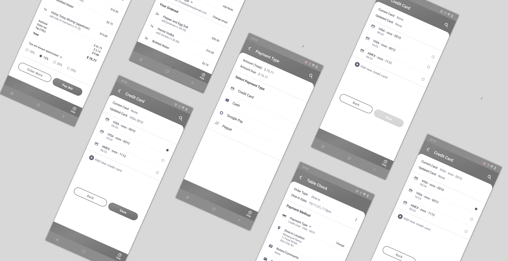

Medium Fidelity Prototype
Medium fidelity wireframes and prototype concept - illustrating contactless dining experiences through mobile devices. Link to Figma prototype here. Case study also contains storybords to accompany the wireframes.
 Kevin Towner•08.12.21•2 minute read
Kevin Towner•08.12.21•2 minute read

Medium fidelity wireframes
Product Specifications
Purpose
The purpose of this activity was to excercise our storyboarding and mid-fidelity prototyping skills. There was a relatively high emphasis on proper storyboarding before diving into the prototypes. Class was split up into teams and were tasked with storyboarding and designing a hypothetical product that automates the process of visiting a restaraunt.
Product specifications:
- • Diners can find/see vacant tables and reserve or occupy them
- • Diners can browse the menu and enter their order at any time throughout their visit
- • Cooks receive orders
- • Servers deliver orders when complete
- • Diners can signal a need for help at any point in the process
- • Diners can pay for their order using different options
- • Staff are alerted to tables that need bussing
- • Other features as you decide
Storyboard key:
- Team Member One (Orange)
- Team Member Two - Me (Purple)
- Team Member Three (Teal)
Storyboards
Seating, reservations & menu
Storyboard Steps
- • Selects order type and reserves a time slot
- • Selects table and confirms of reservation
- • Sits down and interacts with available options
- • Staff receives notification of which table needs assistance
Order submission & food delivery
Storyboard Steps
- • Feeling hungry and awaiting ordered food
- • Kitchen staff receive the order
- • Server available for questions from customer
- • Busser is notified when food is ready and where it is going
Order type, checkout & payment
Storyboard Steps
- • Person makes an order en route to restaraunt
- • Items are selected and confirmed
- • Payment options are selected
- • User opts for cash payment over paying with card
Prototypes
Medium fidelity prototypes
Due to time limitations we briefly met as a group a day before the project deadline to discuss our storyboards decide what we were going to prototype. The group decided to prototype "teal" and "purple" specifications while contributor "orange" took on the role of consolidating artifacts, documenting storyboard feedback, and creating the design report deliverable.
Prototyping roles:
- • Maintain & organize group artifacts and processes into a cohesive design report
- • Diners can find/see vacant tables and reserve or occupy them
- • Diners can browse the menu and enter their order at any time throughout their visit
- • Diners can signal a need for help at any point in the process
- • Diners can pay for their order using different options
Prototyping key:
- Team Member One (Orange)
- Team Member Two - Me (Purple)
- Team Member Three (Teal)